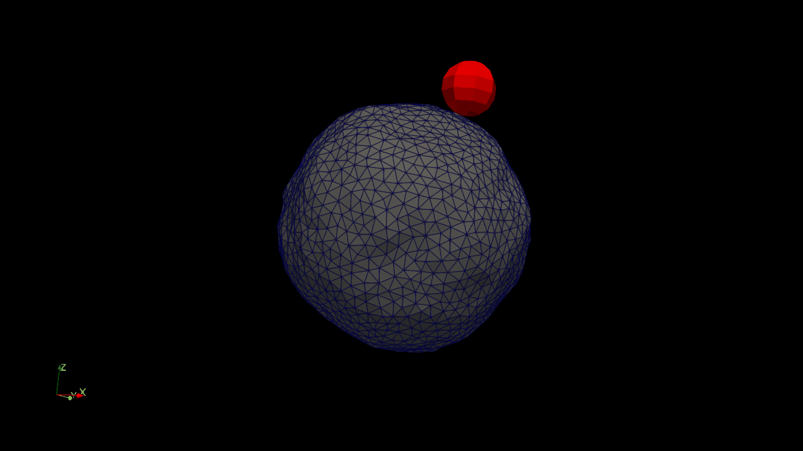
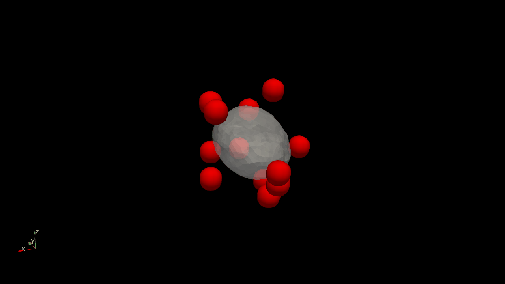
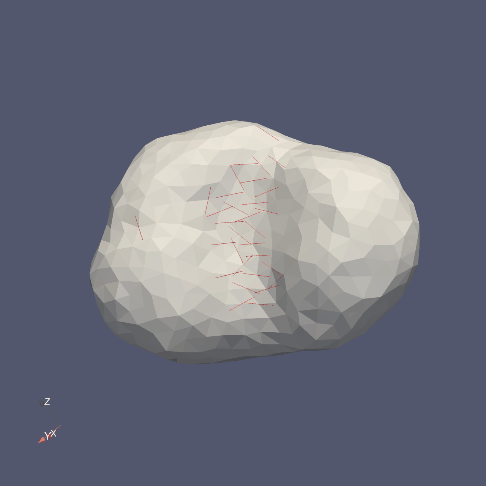
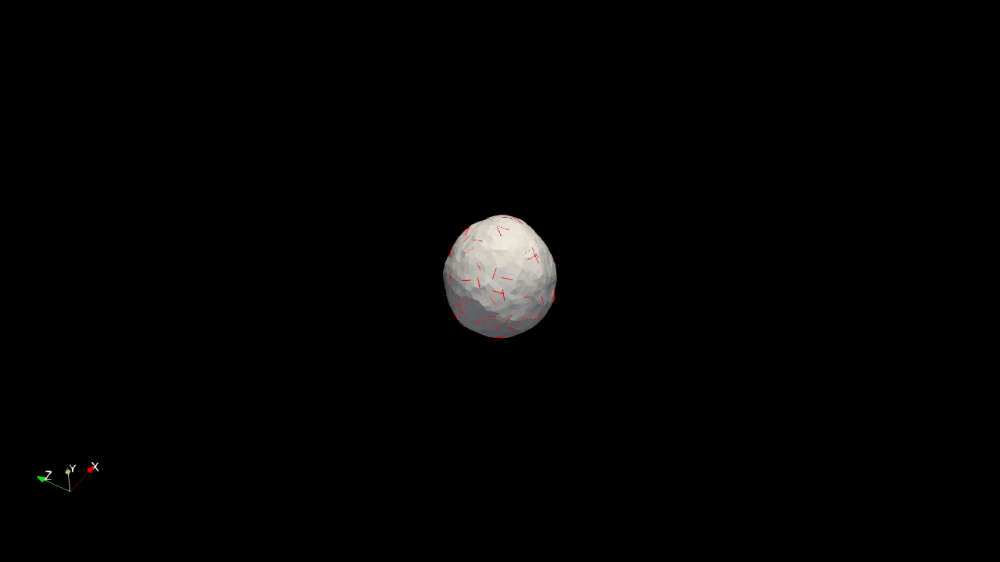

Mesoscale Model Simulations
Planar Membrane Dynamics
Phase Separation
Lipid Tube
Diffusion Study
Colloidal Engulfment
Mesh-Based Simulations

Particle Engulfment

Multiple Particles

Inclusion Ring

Visualizing Lipid Bilayer Dynamics and Mesh-based Simulations



